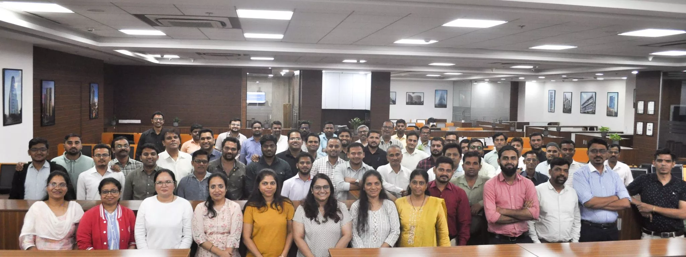

Premier Technology Solutions
At Glass Wall Systems, we operate at the forefront of design and manufacturing innovation. Driven by a team of over 30 expert designers and guided by 11 team leaders, we utilize Orgadata™ production software to streamline fabrication and eliminate errors, while leveraging AutoCAD™, Ansys™, STAAD™, and Revit™ to optimize engineering and structural designs. Powered by these advanced 3D design tools, our team brings even the most complex and dynamic façade concepts to life with absolute precision. Once finalized, complex structural geometries are fabricated in-house with adherence to uncompromising quality benchmarks.
Equipped with elite software for design, structural optimization, and production, our team has the ultimate tools to ensure precision.
Skill Development at Glass Wall System
Technical expertise is the ultimate differentiator in our field. To maintain our competitive edge and in the spirit of continuous learning, we run internal Skill Training Programs (STPs) that offer our design and engineering teams continuous professional development. By facilitating advanced courses and targeted workshops on emerging industry trends, we keep our workforce firmly aligned with next-generation technologies.
Expertise And Experience
Our biggest USP is our strength in engineering. We have a senior design team of over 45 experts including in-house structural engineers and architects.
With design offices in Mumbai, Bangalore and Kochi, GWS attracts the best talent in the country.
The Design and Engineering team at Glass Wall Systems is one of the largest in the country with over 30 skilled designers.
